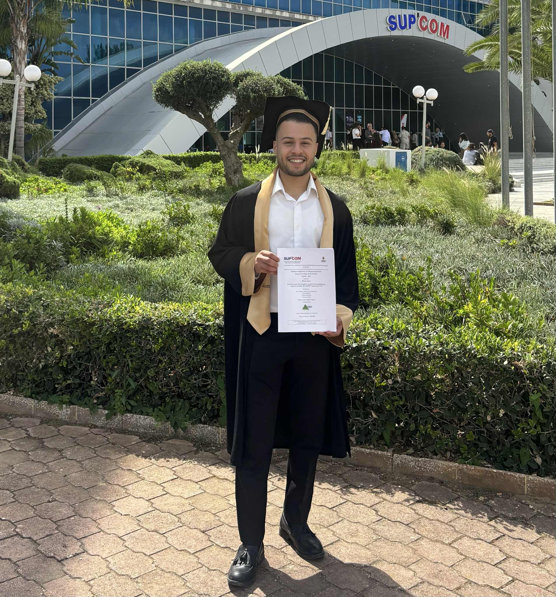

RAG-Guard System
Intelligent Query Routing using Langchain & Llama 3.1. Integrates CRAG and Self-RAG techniques for enhanced query handling.
- Langchain
- GenAI
- Vector DB
Freshly graduated Data Scientist & AI Engineer. Expert in RAG Architectures, Computer Vision, and Physical Modeling. Previously at CESBIO/CNRS.

Contributed to the enhancement of the 3D DART model for satellite observations. Integrated Machine Learning based approaches to estimate variables for atmospheric radiative transfer modeling.
Leveraged OCR and Computer Vision (OpenCV) for automated ID verification and facial recognition, enhancing security protocols and user authentication.
Performed Feature Engineering & Clustering for hand activity recognition. Managed experiments tracking using MLflow.
Generated data-driven insights for strategic decision-making. Developed predictive models for customer demand and deployed a Chatbot using IBM Watson Assistant.
Intelligent Query Routing using Langchain & Llama 3.1. Integrates CRAG and Self-RAG techniques for enhanced query handling.
An NLP-to-SQL converter leveraging Llama 3 and Grockcloud. Transforms natural language into functional SQL commands.
Developed a car plate detection and recognition system using computer vision techniques for accurate ID reading.
Predictive model analyzing brain activity from fNIRS images to forecast task execution speed based on neural responses.
Implemented SHAP & LIME for Deep Learning classifiers to help doctors interpret medical image decisions.
Automated tool using Streamlit and GenAI to create personalized cover letters directly from job offer URLs.